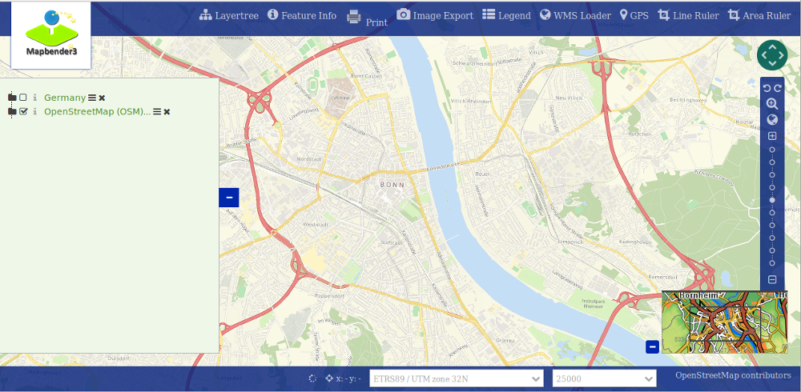

How to create your own Template?¶
Mapbender3 comes with application templates you can use. But usually you want to use your own template with your own corporate design. This document will show you how to create a Workshop DemoBundle for demonstration purposes.
From version 3.0.4.0 on you can change the style of your application with the css-Editor. You find the documentation about the css-editor at How to change the style of your application with the css-editor?.
How to create your own template?¶
There are some steps you have to follow on the way to your own template.
- create your own bundle
- create a template php-file to register your template
- create your own twig-file
- create your own css-file(s)
- register your bundle in app/AppKernel.php
- use your template in yml-configuration or choose it through the administration (for new applications) or change the template path for an existing application in your database in table mb_core_application in column template
Notice: We already prepared a Workshop/DemoBundle that you can use as a template. You can download it here:
- Workshop/DemoBundle at https://github.com/mapbender/mapbender-workshop
Create your own bundle¶
User bundles are stored in the src-directory.
This is how the structure can look like:
src/Workshop/DemoBundle/
WorkshopDemoBundle.php
/Resources
/public
demo_fullscreen.css
/imgage
workshop.ico
workshop_logo.png
print.png
...
/views
/Template
fullscreen_demo.html.twig
/Template
DemoFullscreen.php
Create a new namespace¶
The file WorkshopDemoBundle.php creates the namespace for the bundle and refers to the template and to your css-file(s).
<?php
/*
* This file is part of the Mapbender 3 project.
*
* For the full copyright and license information, please view the LICENSE
* file that was distributed with this source code.
*/
namespace Workshop\DemoBundle;
use Mapbender\CoreBundle\Component\MapbenderBundle;
/**
* WorkshopDemo
*
* @author Astrid Emde
*/
class WorkshopDemoBundle extends MapbenderBundle
{
/**
* @inheritdoc
*/
public function getTemplates()
{
return array('Workshop\DemoBundle\Template\DemoFullscreen');
}
/**
* @inheritdoc
*/
public function getElements()
{
return array(
);
}
}
Create your own template file¶
In our example the template file is called FullscreenDemo.php. You find it at src/Workshop/DemoBundle/Template/FullscreenDemo.php.
In the template file you define the name of your template, the regions that you want to provide and refer to a twig file.
<?php
namespace Workshop\DemoBundle;
use Mapbender\CoreBundle\Component\MapbenderBundle;
class DemoFullscreen extends MapbenderBundle
{
...
}
public static function getTitle()
{
return 'DemoFullscreen';
}
....
static public function listAssets()
{
$assets = array(
'css' => array('@MapbenderCoreBundle/Resources/public/sass/template/fullscreen.scss','@WorkshopDemoBundle/Resources/public/demo_fullscreen.css'),
'js' => array(
'/components/underscore/underscore-min.js',
'@FOMCoreBundle/Resources/public/js/widgets/popup.js',
'@FOMCoreBundle/Resources/public/js/frontend/sidepane.js',
'@FOMCoreBundle/Resources/public/js/frontend/tabcontainer.js',
'@MapbenderCoreBundle/Resources/public/regional/vendor/notify.0.3.2.min.js',
"/components/datatables/media/js/jquery.dataTables.min.js",
'/components/jquerydialogextendjs/jquerydialogextendjs-built.js',
"/components/vis-ui.js/vis-ui.js-built.js"
),
'trans' => array()
);
return $assets;
}
...
->render('WorkshopDemoBundle:Template:demo_fullscreen.html.twig',...
Adding properties for your “sidepane” region¶
For a “sidepane” region are “tabs” and “accordion” properties supported.
- “tabs” orders Mapbender elements in tabs
- “accordion” displays Mapbender elements as an accordion list
For adding you define the function “getRegionsProperties” in the template file.
For configuration you check an option in your application’s configuration.
/**
@inheritdoc
*/
public static function getRegionsProperties()
{
return array(
'sidepane' => array(
'tabs' => array(
'name' => 'tabs',
'label' => 'mb.manager.template.region.tabs.label'),
'accordion' => array(
'name' => 'accordion',
'label' => 'mb.manager.template.region.accordion.label')
)
);
}
Create your own twig-file¶
You find the twig-files at the following path:
- mapbender\src\Workshop\DemoBundle\Resources\views\Template
The easiest way to create your own twig file is to copy an existing twig, save it under a new name and change the content like colors.
cd mapbender/src/Workshop/DemoBundle/Resources/views/Template
Use the existing template from mapbender/src/Mapbender/CoreBundle/Resources/views/Template/fullscreen.html.twig and copy it to fullscreen_demo.html.twig
Create your own css-file¶
Create an empty css-file and fill it with content. From Mapbender3 version 3.0.3.0 you only have to define the parts that have to look different from the default style of the element.
Firebug can help you to find out the styles you want to change.
Your file could be named like this: src/Workshop/DemoBundle/Resources/public/demo_fullscreen.css and have the following definition:
.toolBar {
background-color: rgba(0, 29, 122, 0.8) !important;
}
.toolPane {
background-color: rgba(0, 29, 122, 0.8) !important;
}
.sidePane {
overflow: visible;
background-image: url("");
background-color: #eff7e9;
}
.sidePane.opened {
width: 350px;
}
.logoContainer {
background-color: white !important;
background-image: url("") !important;
-webkit-box-shadow: 0px 0px 3px #0028AD !important;
-moz-box-shadow: 0px 0px 3px #0028AD !important;
box-shadow: 0px 0px 3px #0028AD !important;
}
.sidePaneTabItem {
background-color: #0028AD;
}
.layer-opacity-handle {
background-color: #0028AD;
}
.mb-element-overview .toggleOverview {
background-color: #0028AD;
}
.button, .tabContainerAlt .tab {
background-color: #0028AD;
}
.iconPrint:before {
/*content: "\f02f"; }*/
content:url("image/print.png");
}
.popup {
background-color: #eff7e9;
background-image: url("");
}
.pan{
background-color: rgba(0, 93, 83, 0.9);
}
The result of these few lines of css will look like this:
{kind=link}
When you open your new application a css-file will be created at:
- web/assets/WorkshopDemoBundle__demo_fullscreen__css.css
If you do further edits at your css file you may delete the generated css file in the assets directory to see the changes. You also have to clear the browser cache.
sudo rm -f web/assets/WorkshopDemoBundle__demo_fullscreen__css.css
Register your template¶
To register your template you have to create a file at
- mapbender/src/Workshop/DemoBundle/Template/DemoFullscreen.php
cd mapbender/src/Mapbender/CoreBundle/Template
cp Fullscreen.php mapbender/src/Workshop/DemoBundle/Template/DemoFullscreen.php
Add your new css-file to the listAssets function as last array-entry:
static public function listAssets()
{
$assets = array(
'css' => array('@MapbenderCoreBundle/Resources/public/sass/template/fullscreen.scss','@WorkshopDemoBundle/Resources/public/demo_fullscreen.css'),
'js' => array(
'/components/underscore/underscore-min.js',
'@FOMCoreBundle/Resources/public/js/widgets/popup.js',
'@FOMCoreBundle/Resources/public/js/frontend/sidepane.js',
'@FOMCoreBundle/Resources/public/js/frontend/tabcontainer.js',
'@MapbenderCoreBundle/Resources/public/regional/vendor/notify.0.3.2.min.js',
"/components/datatables/media/js/jquery.dataTables.min.js",
'/components/jquerydialogextendjs/jquerydialogextendjs-built.js',
"/components/vis-ui.js/vis-ui.js-built.js"
),
'trans' => array()
);
return $assets;
}
public function render($format = 'html', $html = true, $css = true,
$js = true)
{
$templating = $this->container->get('templating');
return $templating
->render('WorkshopDemoBundle:Template:demo_fullscreen.html.twig',
array(
'html' => $html,
'css' => $css,
'js' => $js,
'application' => $this->application));
}
Use your new template in mapbender.yml¶
Now you can use the template in mapbender.yml where you can configure applications.
You find the mapbender.yml at:
- app/config
"template: Workshop\DemoBundle\Template\DemoFullscreen"
Register your bundle in app/AppKernel.php¶
When you create a new application through the Mapbender3 administration you have to choose a template you want to use.
Before your new template will show up you have to register your bundle in the file app/AppKernel.php
- mapbender/app/AppKernel.php
class AppKernel extends Kernel
{
public function registerBundles()
{
$bundles = array(
// Standard Symfony2 bundles
new Symfony\Bundle\FrameworkBundle\FrameworkBundle(),
....
// Extra bundles required by Mapbender3/OWSProxy3
new FOS\JsRoutingBundle\FOSJsRoutingBundle(),
// FoM bundles
new FOM\CoreBundle\FOMCoreBundle(),
...
// Mapbender3 bundles
new Mapbender\CoreBundle\MapbenderCoreBundle(),
...
new Workshop\DemoBundle\WorkshopDemoBundle(),
);
Add write access to the web-directory for your webserver user.
chmod ug+w web
Update the web-directory. Each bundle has it’s own assets - CSS files, JavaScript files, images and more - but these need to be copied into the public web folder:
app/console assets:install web
Alternatively, as a developer, you might want to use the symlink switch on that command to symlink instead of copy. This will make editing assets inside the bundle directories way easier.
app/console assets:install web --symlink --relative
Now your template should show up in the template list when you create a new application.
You can change the template for existing applications in the table mb_core_application in column template.
For the WorkshopDemoBundle you can change MapbenderCoreBundleTemplateFullscreen to WorkshopDemoBundleWorkshopDemoBundle.
How to change your design?¶
You have to edit the following files, if want to change the design
- twig - changes in the structure (like - delete a component like sidebar), refer to a logo
- demo_fullscreen.css - changes of color, icons, fonts
How to change the logo?¶
The logo (default is the Mapbender3 logo) can be changed in the parameters.yml. Which causes a global change.
server_logo: bundles/workshopdemo/image/workshop_logo.png
Or in the twig file:
<img class="logo" height="40" alt="Workshop Logo" src="{{ asset('bundles/workshopdemo/imgage/workshop_logo.png')}}" />
How to change the title and favicon?¶
You can adjust the title and the favicon also in the twig-file:
{% block title %}Workshop - {{ application.title }}{% endblock %}
{% block favicon %}{{ asset('bundles/workshopdemo/imgage/workshop.ico') }}{% endblock %}
How to change the buttons?¶
Mapbender3 uses Fonts from the FontAwesome collection:
@font-face {
font-family: 'FontAwesome';
src: url("../../bundles/fomcore/images/icons/fontawesome-webfont.eot?v=3.0.1");
src: url("../../bundles/fomcore/images/icons/fontawesome-webfont.eot?#iefix&v=3.0.1") format("embedded-opentype"), url("../../bundles/fomcore/images/icons/fontawesome-webfont.woff?v=3.0.1") format("woff"), url("../../bundles/fomcore/images/icons/fontawesome-webfont.ttf?v=3.0.1") format("truetype");
font-weight: normal;
font-style: normal; }
In your css-file you can refer to a font images like this:
.iconPrint:before {
content: "\f02f";}
If you want to use an image you could place the image in your bundle and refer to it like this
.iconPrint:before {
content:url("imgage/print.png");}
Try this out¶
- you can download the Workshop/DemoBundle at https://github.com/mapbender/mapbender-workshop
- change the color of your icons
- change the size of your icons
- change the color of the toolbar
- use an image instead of a font-icon for your button
- move the position of your overview to the left
- Have a look at the workshop files to see how it works